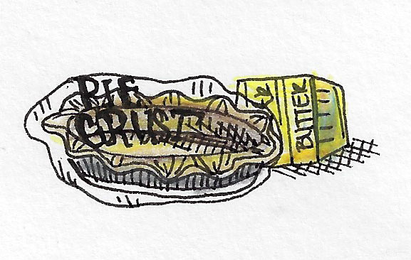
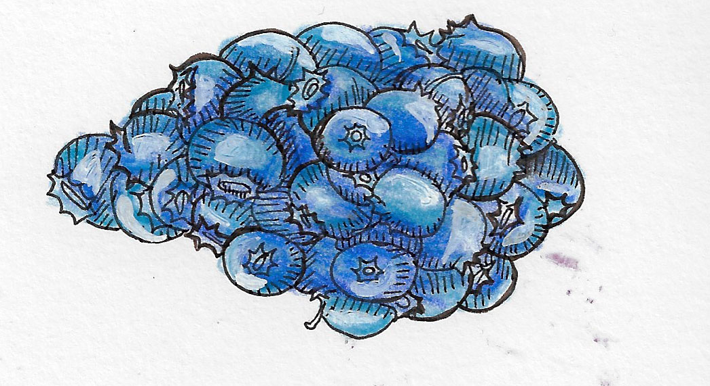

Serves: 8
Prep Time: 15 min
Cook Time: 40 min
Ingredients:
Pie Crust:
Gluten Free Pie Crust
Filling:
2 tablespoons rice flour
3/4 cups sugar
2 3/4 cups blueberries
2 1/2 tablespoons vanilla extract
1 cup sour cream
1 egg
Crumble:
2 tablespoons butter
3 tablespoons rice flour
1 1/2 tablespoons sugar
Optional: finely chopped nut of choice
Instructions:
1. Preheat the over to 400˚F.
2. Mix flower and sugar in a bowl.
3. In a separate bowl combine egg, vanilla extract and sour cream.
4. Combine wet and drying ingredients.
5. Fold fresh or frozen blueberries into the mixture.
6. Put mixture in pan. Cover edges of crusts with aluminum foil, remove after 25 min. Bake for 40.